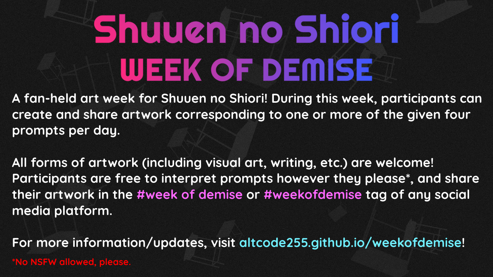
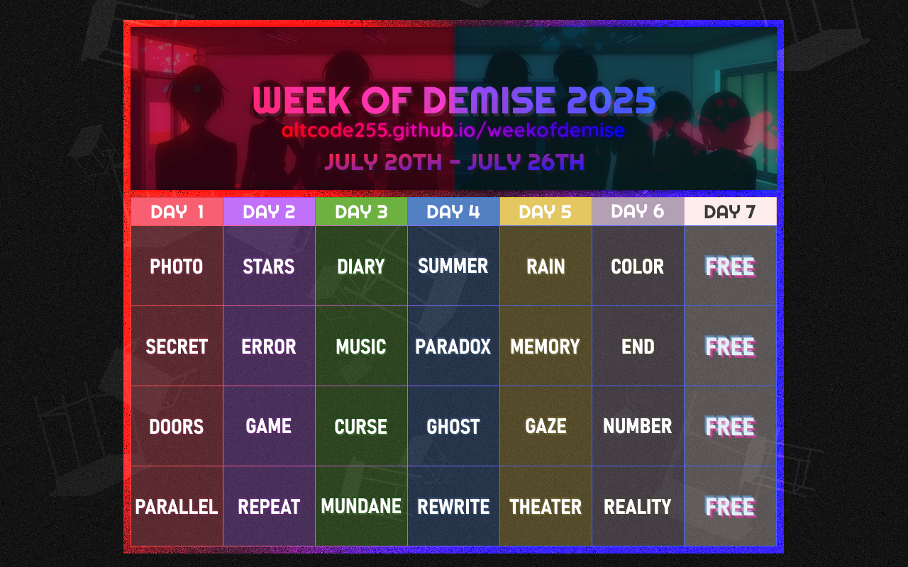
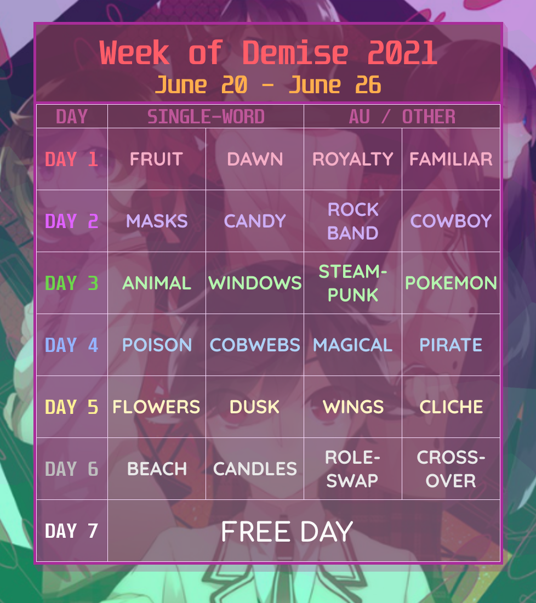
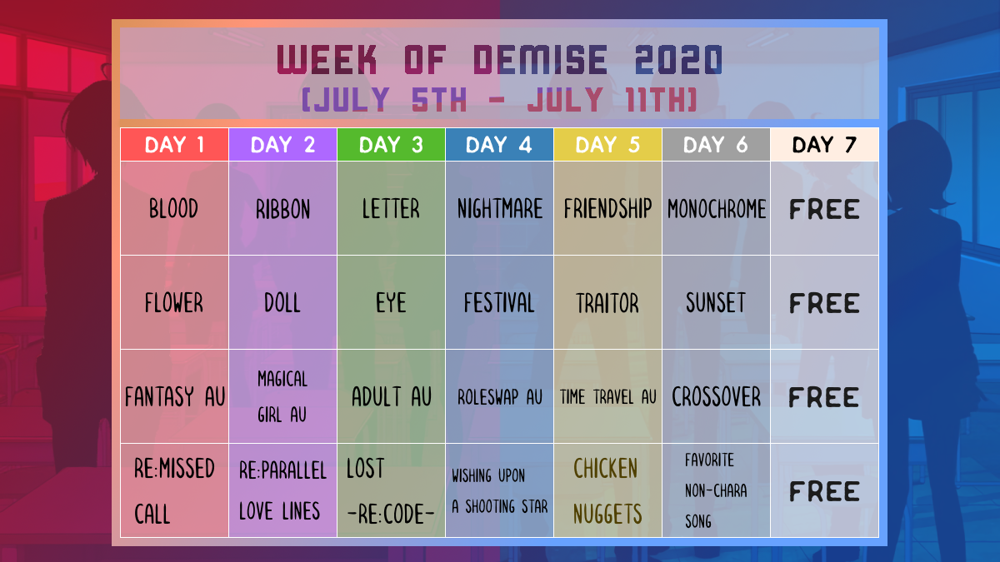
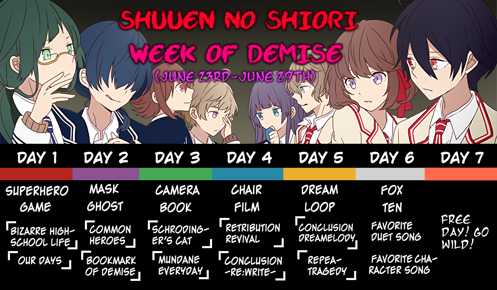

Shuuen no Shiori
WEEK OF DEMISE
Organized by @ALTCODE255
Table of Contents
Information
This is a fan-held art week for Shuuen no Shiori! During this week, participants can create and share artwork corresponding to one or more of the four given prompts per day.
Anyone is free to join, and all forms of artwork* (including visual art, writing, etc.) are welcome! There are no strict requirements for participation.
Participants are free to interpret prompts however they please (no NSFW), and share their artwork in the #week of demise or #weekofdemise tag of any social platform.
*Shouldn't have to be said, but please do not share AI-generated or LLM-generated creations for Week of Demise.Click to see infographic; for sharing purposes.
{kind=link}
Current Status (2025): Prompt List Released!
As of May 16th, the survey has closed. Out of 24 votes, 16 voted for Week of Demise 2025 to be held between July 20th - July 26th. I got a little impatient, and already had the prompt list prepared, so... the prompt list has been released early! Have fun planning!
Official Posts:Feel free to share the prompt list around on other social media as well.
Prompt Lists
2025
| Day # | Prompt Choices | |||
|---|---|---|---|---|
| 1 | Photo | Secret | Doors | Parallel |
| 2 | Stars | Error | Game | Repeat |
| 3 | Diary | Music | Curse | Mundane |
| 4 | Summer | Paradox | Ghost | Rewrite |
| 5 | Rain | Memory | Gaze | Theater |
| 6 | Color | End | Number | Reality |
| 7 | Free Day | |||
2021
| Day # | Prompt Choices | |||
|---|---|---|---|---|
| Single-Word | AU / Other | |||
| 1 | Fruit | Dawn | Royalty | Familiar |
| 2 | Masks | Candy | Rock Band | Cowboy |
| 3 | Animal | Windows | Steampunk | Pokémon |
| 4 | Poison | Cobwebs | Magical | Pirate |
| 5 | Flowers | Dusk | Wings | Cliché |
| 6 | Beach | Candles | Roleswap | Crossover |
| 7 | Free Day | |||
2020
| Day # | Prompt Choices | |||
|---|---|---|---|---|
| Single-Word | AU | Song / Other | ||
| 1 | Blood | Flower | Fantasy | Re:Missed Call |
| 2 | Ribbon | Doll | Magical Girl | Re:Parallel Love Lines |
| 3 | Letter | Eye | Adult | Lost -Re:code- |
| 4 | Nightmare | Festival | Roleswap | Wishing Upon a Shooting Star |
| 5 | Friendship | Traitor | Time Travel | Chicken Nuggets |
| 6 | Monochrome | Sunset | Crossover | Favorite Non-Character Song |
| 7 | Free Day | |||
2019
| Day # | Prompt Choices | |||
|---|---|---|---|---|
| Single-Word | Song | |||
| 1 | Superhero | Game | Bizarre High School Life | Our Days |
| 2 | Mask | Ghost | Common Heroes | Bookmark of Demise |
| 3 | Camera | Book | Schrödinger's Cat | Mundane Everyday |
| 4 | Chair | Film | Retribution Revival | Conclusion -Re:write- |
| 5 | Dream | Loop | Conclusion Dreamelody | Repeatragedy |
| 6 | Fox | Ten | Favorite Duet Song | Favorite Character Song |
| 7 | Free Day | |||
Frequently Asked Questions (FAQ)
Who are you?
I'm Nameless (they/them)! I've been a fan of Shuuenpro since 2019, and have done a ton of stuff relating to it for the past few years. Most notably, I created and maintain a Shuuen no Shiori Guide / TL Masterlist website. I also own a Shuuen no Shiori Discord server.
How often is this event held?
Ideally, the Week of Demise is held annually every summer. Realistically, it may not be held every year, depending on my motivation and availability.
Between 2022–2024, I did not plan/organize for Week of Demise mainly because I was busy with college.
I don't draw, but I write fanfiction or create fan works in another form. Can I still participate?
Yes, of course. All art mediums are welcome here. If your work can't be directly shared in a post tagged with #weekofdemise, then include a link to it in your post instead (such as a URL to an AO3 fic).
Are pairings / ship art okay?
Yes, you may create ship / pairing artwork for the Week of Demise, so as long as it's not NSFW.
Is portrayal of blood/gore/violence in my art OK?
Considering the gruesome themes of Shuuen no Shiori, yes. For some prompts, it may even be expected. However, out of courtesy for others, please put appropriate content warnings if needed.
Can I choose more than one prompt a day, or combine multiple prompts into one idea?
Yes! Choose as many prompts as you please.
What if I can't participate every day? / What if I'm not available during the week?
Don't worry about it!
1. It's not meant to be a challenge/competition, so participate for the days that you want to.
2. The prompt list is posted a month in advance so that artists have time to prepare/gather ideas or create artwork beforehand if they wish.
3. There's nothing wrong with participating a little late!
What matters the most is that you have fun.
What's a "free day"?
Always held on Day 7 of Week of Demise, in which no prompts are given. You're free to create/share artwork for whatever you wish and put it under the #weekofdemise tag!
Does it matter where I post to? / Are there social accounts I should follow for updates?
1. It doesn't matter, but the places I personally will be checking the most during the event are Bluesky, Tumblr, and Twitter.
2. Tumblr: I will likely announce stuff on my sideblog @re-code1713.
Bluesky: Not really? If I announce stuff, it'll be under the #shuuenpro tag.
Twitter: No. I used to put announcements on @shuuenartweek, but I have mostly moved from posting on Twitter as a whole. There will be no updates to that account.
For the most up-to-date information, you should check this website for updates.
Can I share/post information about this event on social media?
Yes! The more Shuuenpro fans that know about and are interested in the Week of Demise, the merrier. I especially encourage this because I don't have a lot of energy to crosspost across sites. If you're sharing information or prompt lists, please link back to this web page when possible.
Why do the prompt calendars look so bad?
My college major is decidedly not Graphics Design (it's Computer Engineering), and I have never taken a graphics design class in my life. But I at least hope my graphics have improved in look over time, haha.
Links
- Twitter: #weekofdemise
- Tumblr: #week of demise | #weekofdemise
- Instagram: #weekofdemise
- Bluesky: #weekofdemise